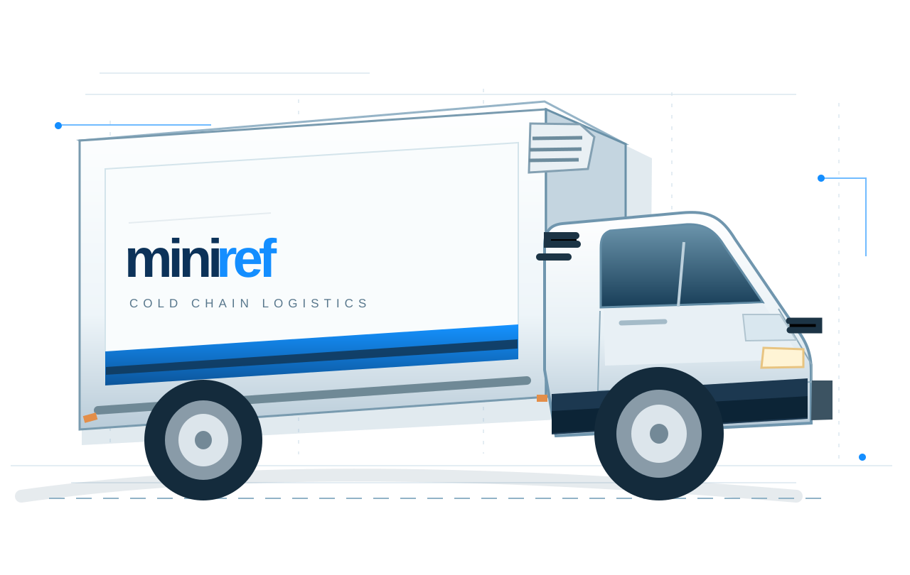
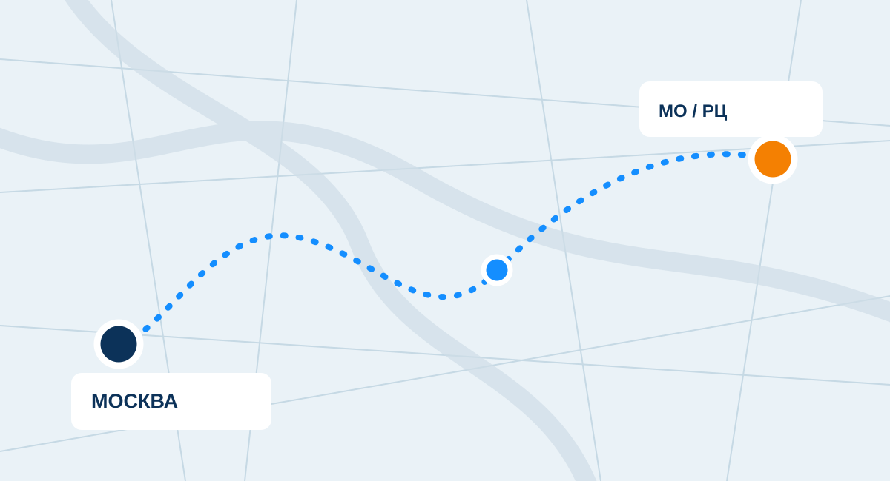

1–2 т
Для небольших партий и маршрутов с несколькими точками.
Городские доставкиПодбор ↗
Москва и Московская область. Выделенная машина под ваш груз: от разовой доставки до регулярных маршрутов по графику.

Не заставляем бизнес подстраиваться под абстрактные тарифы. Начинаем с маршрута, товара и режима перевозки.
Охлаждённые и замороженные грузы, отдельный автомобиль под задачу.
ПодробнееМаршруты по графику для магазинов, складов и производителей.
ПодробнееКогда рейс нужен вне привычного расписания. По доступности машины.
ПодробнееПомогаем согласовать окна, режим и сопроводительные документы.
ПодробнееВаш груз.
Ваша машина.
Ваш маршрут.
 COLD CHAIN / 001
COLD CHAIN / 001Перед рейсом уточняем требования к продукции, маршрут и условия погрузки. Подходящий режим и возможность его поддержания согласуются до подачи автомобиля.
От небольших городских рейсов до системных поставок по Московской области.

Работаем с магазинами, складами, производителями и распределительными центрами.
Подбираем класс машины исходя из объёма, массы груза, точек маршрута и условий разгрузки. Иллюстрации заменяются реальными фото автопарка.
Никаких длинных анкет для первого обращения. Вначале уточняем главное, а детали согласуем с менеджером.
Груз, температурный режим, адреса и желаемое время.
Подбираем машину и обсуждаем условия выполнения.
Подача, погрузка и рейс по согласованному маршруту.
Выгрузка и передача необходимых документов.
Это не публичный тарифный калькулятор: стоимость зависит от автомобиля, времени, маршрута и условий. Заполните параметры и обсудите итог с менеджером.
Никаких форм с передачей персональных данных: текст заявки формируется прямо в браузере.
Основные условия лучше согласовать до начала перевозки.
Выполняем рейсы по Москве и Московской области. Возможность конкретного маршрута уточняйте при обращении.
Да. Обсудим график, загрузку, точки получения и разгрузки, а также подходящий автомобиль.
Возможность перевозки зависит от требуемого режима и доступного автомобиля. Укажите температуру и характеристики груза заранее.
Сообщите тип груза, маршрут, время в работе, километраж за МКАД и необходимые дополнительные условия. Менеджер уточнит расчёт.